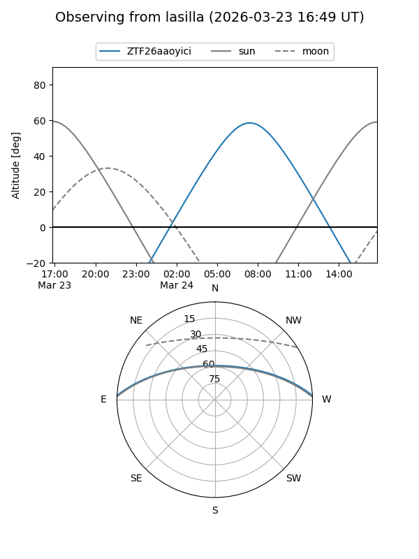
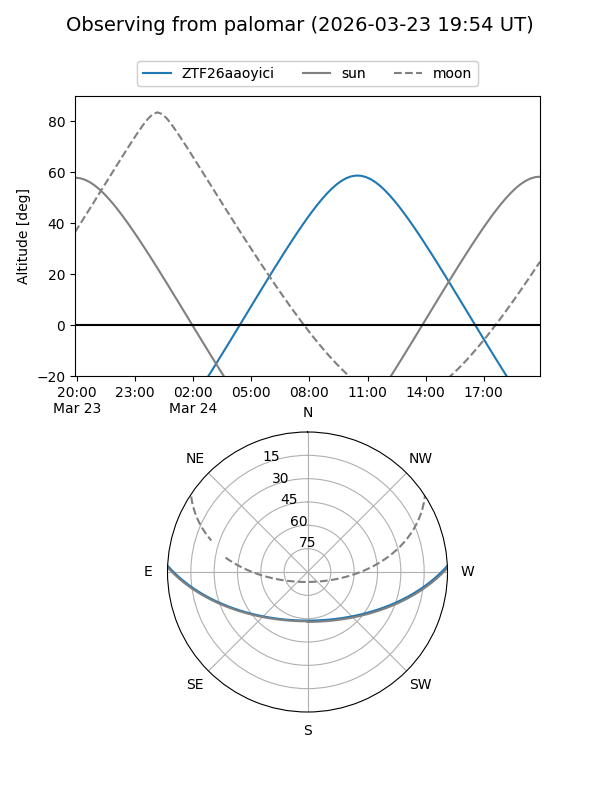

ZTF26aaoyici
Target ZTF26aaoyici at 2026-03-23 12:29
Aliases and brokers:
FINK: link
Lasair: link
ALeRCE: link
alt names
ZTF26aaoyici (ztf,fink_ztf)
Coordinates:
equatorial (ra, dec) = 221.9237,+2.22890
equatorial (HMS+DMS) = 14:47:41.69,+02:13:44.04
galactic (l, b) = (356.0935,+52.66115)
Flags:
Photometry:
last ztfg=17.47
1 ztfg detections
Lightcurve
Visibility


Additional plots